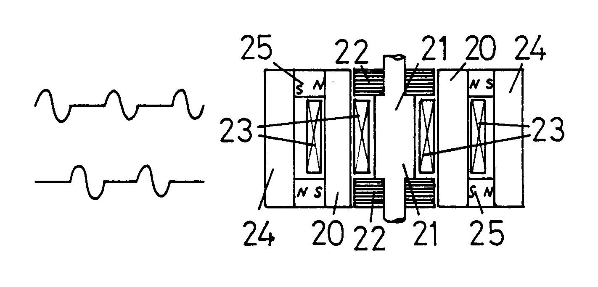

The following is a U.S. Patent granted to Harold Aspden with an issue date of December 4, 1990.
Abstract: A reluctance motor is powered by a commutated a.c. voltage supply which comprises full cycles of the a.c. waveform interspersed with periods of zero power of fixed duration measured in full cycles. Motor structures are described which combine, with the above method of excitation, a feature by which a portion of the magnetic circuit carrying the magnetic flux developing reluctance drive torque during power-on periods is magnetized cyclically over a range above the knee of the applicable B-H curve. A closed circuital d.c. flux path through this portion and separate from the a.c. flux route through the stator poles is magnetized as by permanent magnets to secure this near-saturation condition in which the thermodynamic adiabatic cooling processes operate to enhance the power conversion efficiency of the motor by virtue of domain flux rotation processes.
There is a U.K counterpart to this U.K. patent, namely U.K. Patent No. 2,234,863. Ref. [1991e] in these Web pages.
